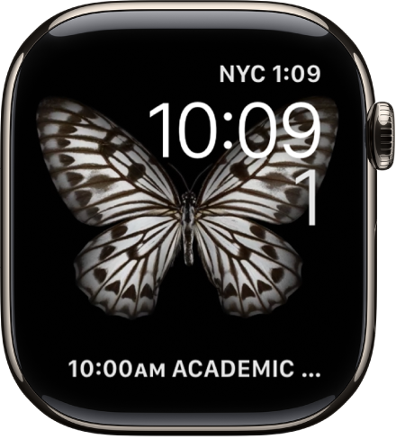

此表盘显示精美的动画主题。
下方的文件数包括本地化资源。固件名称键能确认包的归属；组件的圆屏点击边界、亮屏过渡与 AOD 对照均待设备验证。
原始包 已解析属性表 Mach-O 方法与成员 ARM64 汇编 解出的图集
.mov × 253 .strings × 88 .car × 1 .plist × 1 无扩展名 × 1
原始包 已解析属性表 Mach-O 方法与成员 ARM64 汇编 解出的图集
.mov × 253 .strings × 88 .car × 1 .plist × 1 无扩展名 × 1
原始包 已解析属性表 Mach-O 方法与成员 ARM64 汇编 解出的图集
.mov × 127 .strings × 88 .car × 1 .plist × 1 无扩展名 × 1
NTKMotionFaceBundle.bundleJELLYFISH_COLLECTION_DESCRIPTIONBUTTERFLY_COLLECTION_DESCRIPTIONFLOWER_COLLECTION_DESCRIPTIONEDIT_MODE_LABEL_MOTION_CONTENTEDIT_OPTION_LABEL_MOTION_JELLYFISHEDIT_OPTION_LABEL_MOTION_BUTTERFLIESEDIT_OPTION_LABEL_MOTION_FLOWERS色组与设备条件 共享色组与默认值
+[NTKMotionFaceBundle complicationTypesBySlot];